Prim (Maymani) A.
Artwork
Some of my artworks that I like. Most of these are done with ballpoint pen -- I almost exlusively use pen, it's my favorite!
Artists I look up to: Kim Jung Gi, Rembert Montald, J.C. Leyendecker, Karl Kopinski, leallicna, Hirohiko Araki, SpiderZero, Jorge Jimenez, and many more.
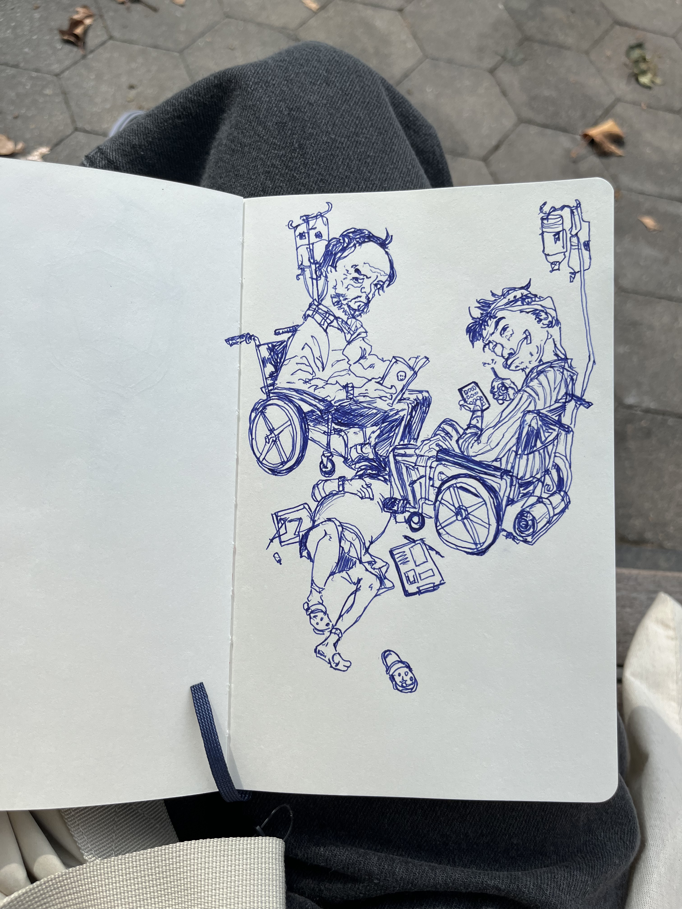
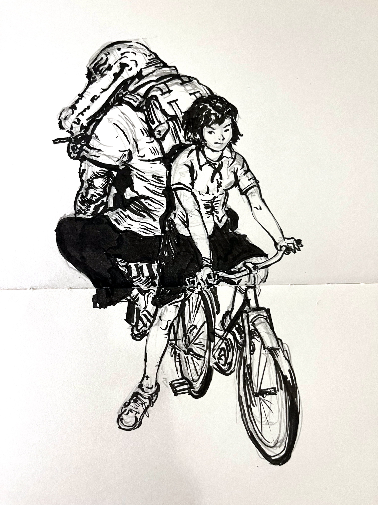
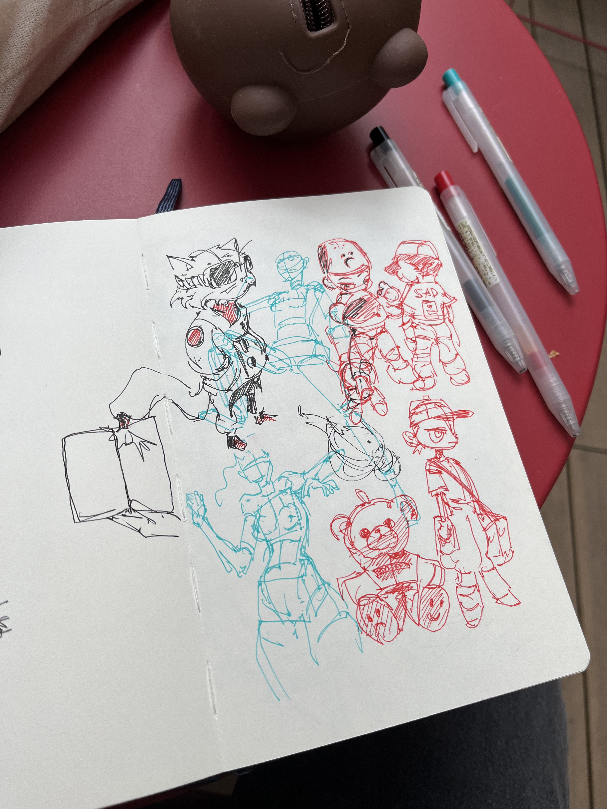
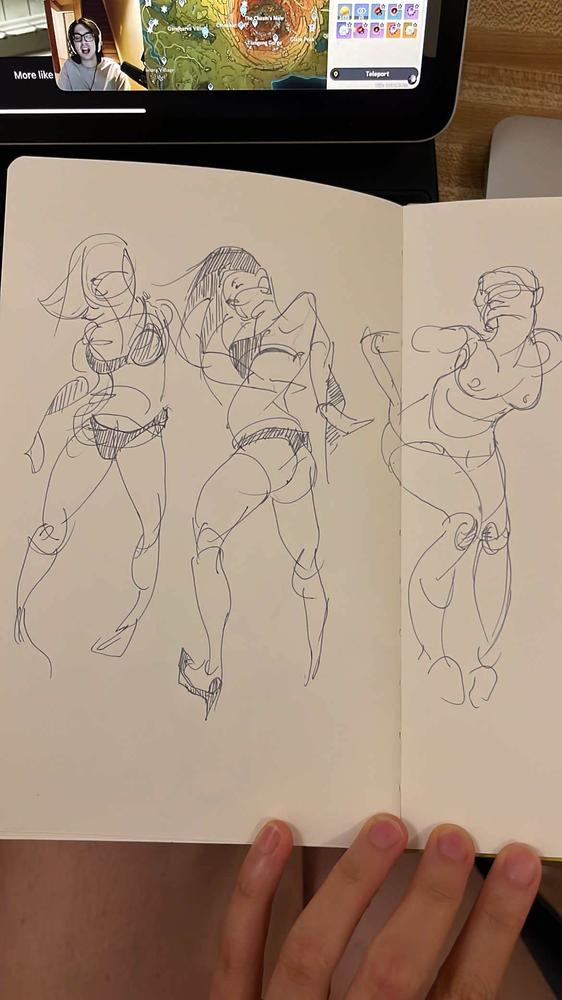
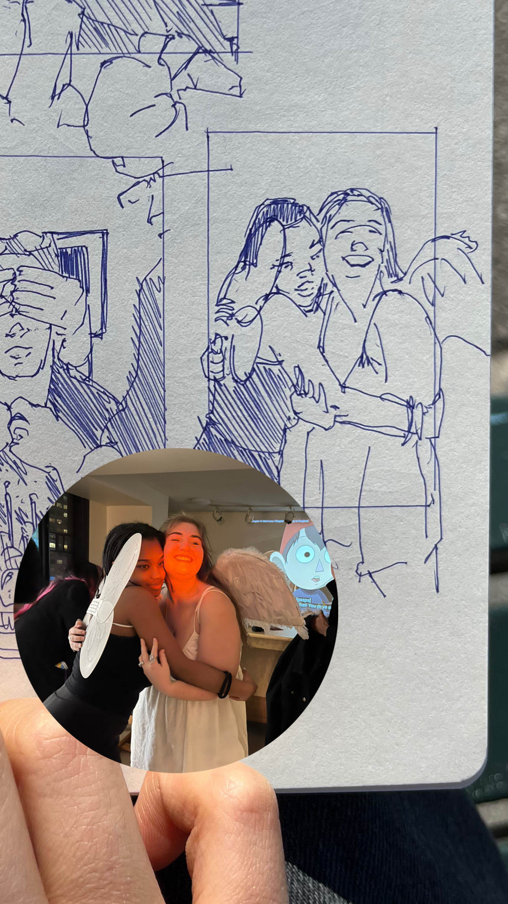
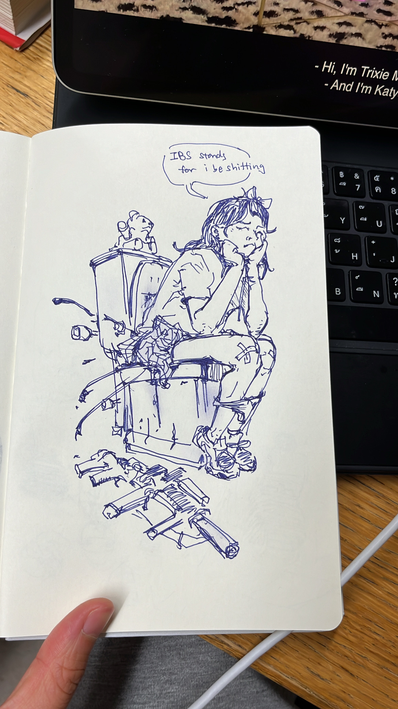
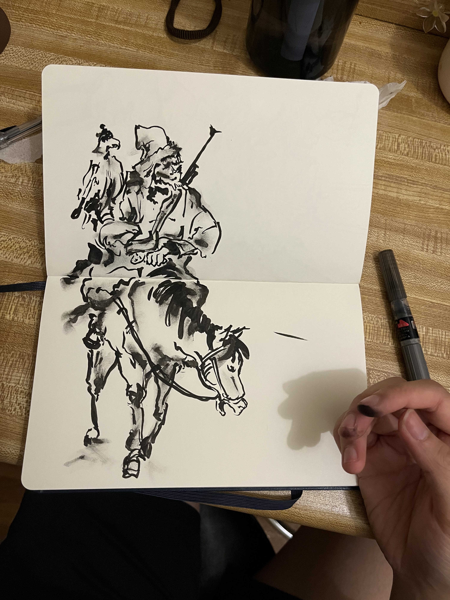
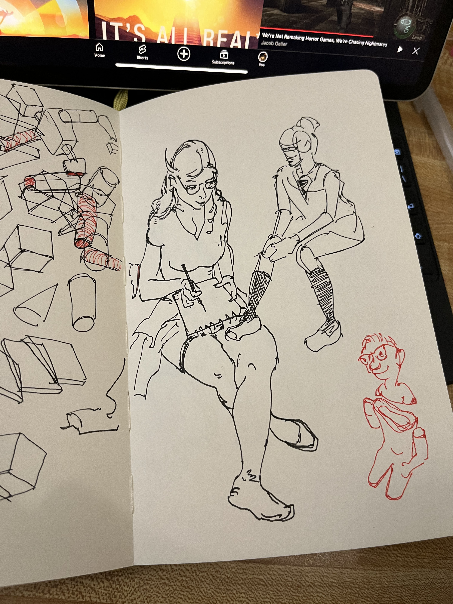
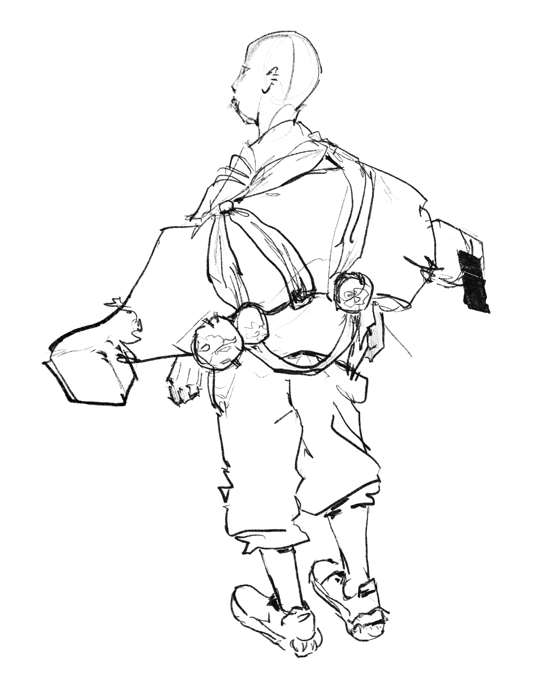

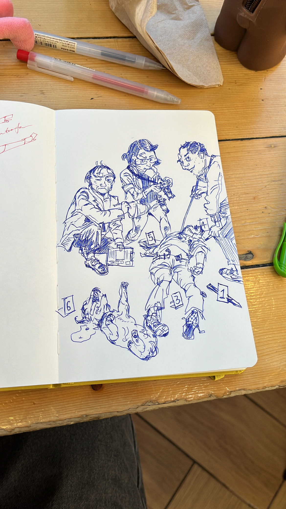
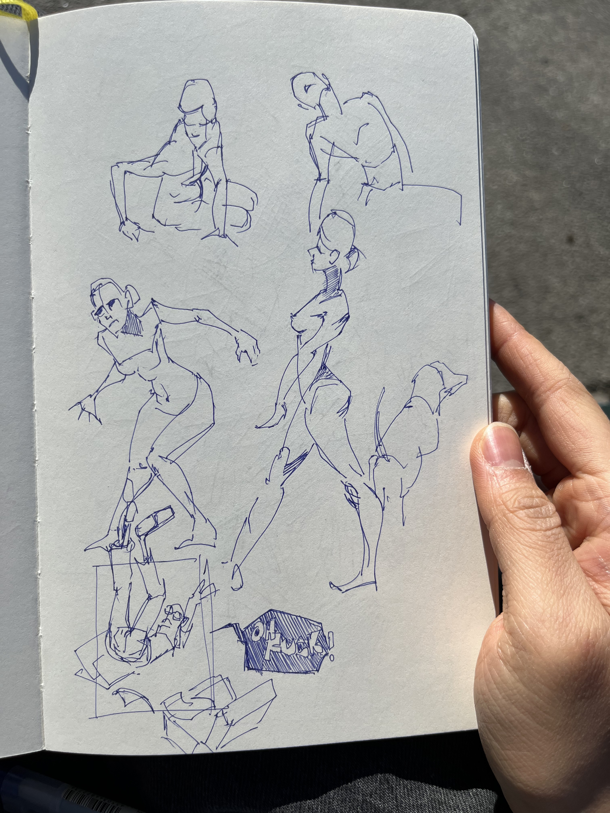
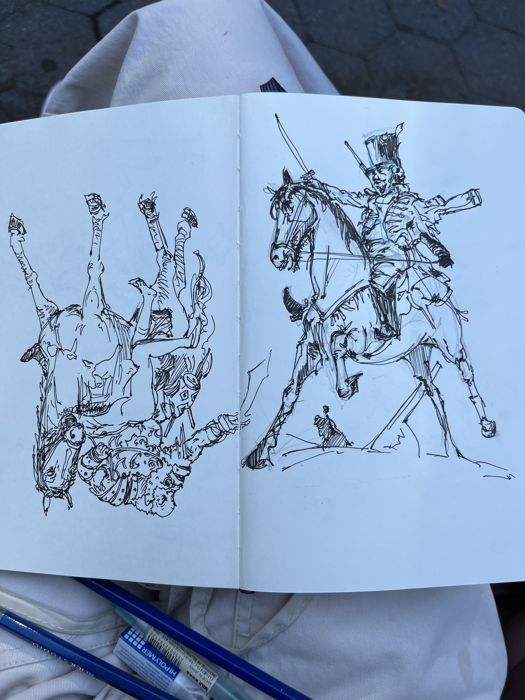